ראשונות

לחם כפרי קלוי משוח בשום ושמן זית, ומעליו קוביות עגבניות טריות, בזיליקום, מלח גס וזילוף של חומץ בלסמי מצומצם. פשוט, פריך ורענן
25 ₪

מאפה איטלקי מסורתי בעבודת יד, פריך מבחוץ ואוורירי מבפנים. נאפה בתנור אבן עם שמן זית כתית מעולה בנדיבות, ענפי רוזמרין טריים וגבישי מלח אטלנטי. מוגש חם לצד מטבל בלסמי מצומצם ושמן זית.
22 ₪

פרוסות דקיקות של פילה בקר נא, מתובלות בשמן זית כתית מעולה, מיץ לימון טרי, עלי רוקט וגילופי גבינת פרמזן (Grana Padano או Parmigiano Reggiano).
32 ₪
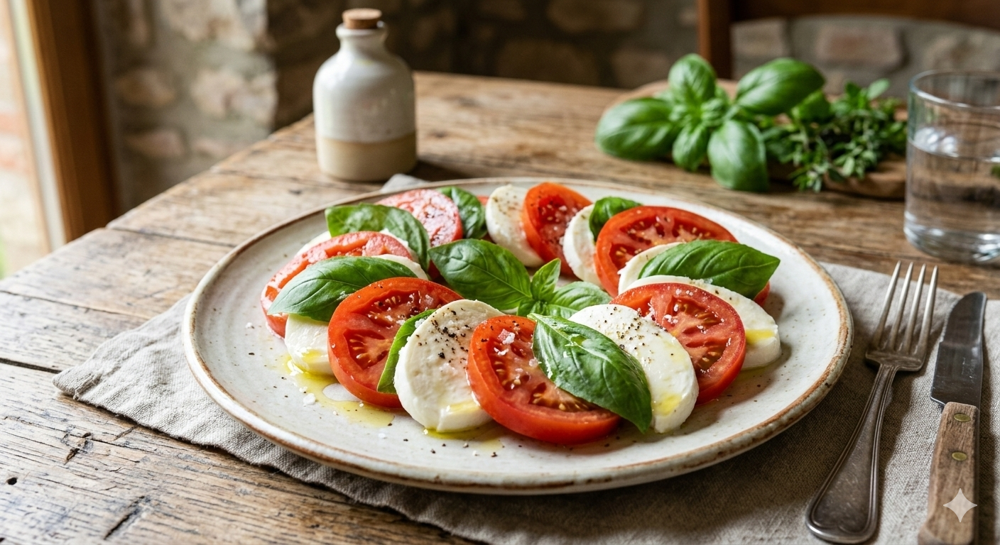
הדגל של איטליה בצלחת: פרוסות של גבינת מוצרלה באפלו טרייה, עגבניות בשלות ועלי בזיליקום. התיבול מינימליסטי — שמן זית ומלח — כדי לתת לחומרי הגלם לזהור.
28 ₪
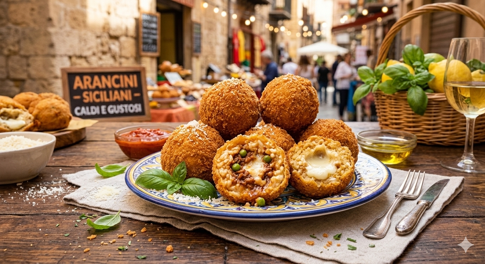
כדורי ריזוטו מטוגנים במילויים שונים (כמו גבינות, ראגו בשר או אפונה), מצופים בפירורי לחם פריכים. זוהי מנת רחוב סיציליאנית אהובה שהפכה למנה ראשונה קלאסית בכל העולם.
33 ₪
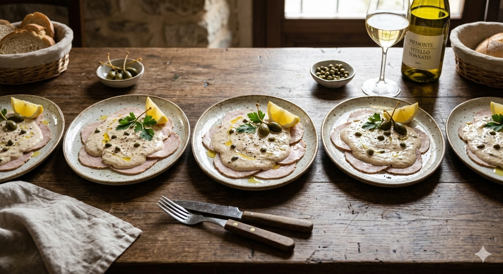
מנה קלאסית מחבל פיימונטה: פרוסות דקות של בשר עגל מבושל המוגשות קרות, כשהן מכוסות ברוטב קרמי עשיר המבוסס על טונה, צלפים ומיונז איכותי. שילוב מפתיע ומעודן של בשר ודגים.
33 ₪
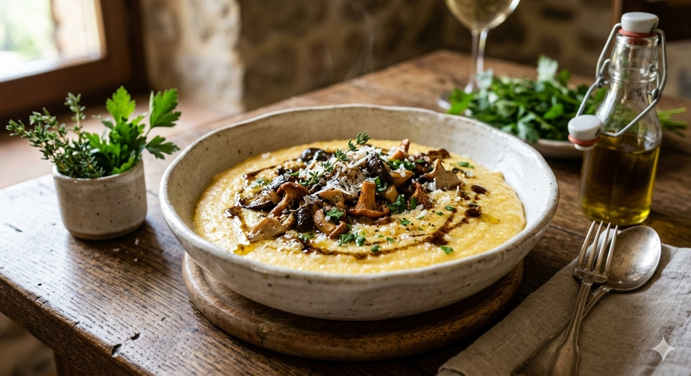
קרם תירס צהוב וחם במרקם קטיפתי, המוגש בדרך כלל עם תערובת פטריות יער מוקפצות בחמאה, שום וטימין, ומעט שמן כמהין מעל לשדרוג הטעם
27 ₪
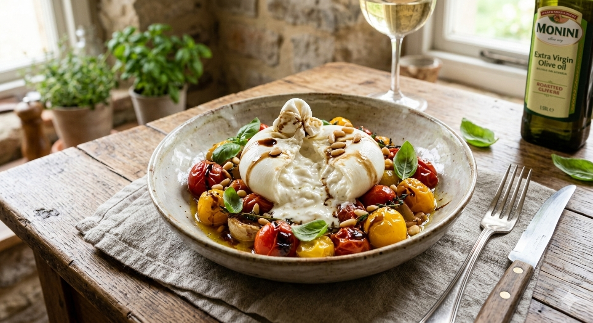
כדור גבינת בוראטה טרייה ועשירה, בעלת מעטפת מוצרלה דקה וליבת שמנת קטיפתית (Stracciatella). מוגשת על מצע של עגבניות שרי צלויות בתנור אבן עם שום, טימין ושמן זית. מעוטרת בקרם בלסמי מצומצם, עלי בזיליקום פריכים וצנוברים קלויים. מומלץ לבצוע את הגבינה ולתת לשמנת להתמזג עם מיצי העגבניות.
26 ₪
פסטות/עיקריות
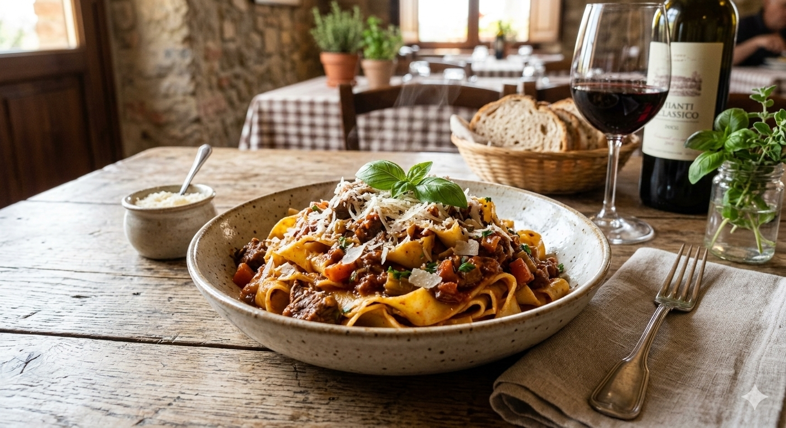
רצועות פסטה רחבות וטריות בבישול ארוך עם ראגו מסורתי של בשר בקר מובחר, ירקות שורש, יין אדום ועגבניות תמר. מוגש עם שפע גבינת פרמזן מלמעלה..
53 ₪
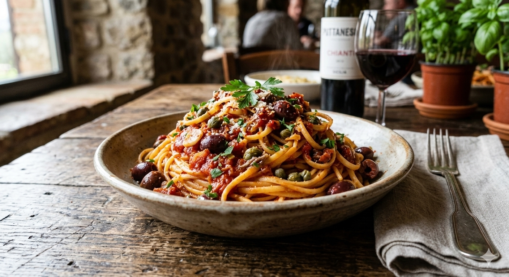
פסטה לינגוויני ברוטב עגבניות פיקנטי עם זיתי קלמטה, צלפים, שום, פלפל צ'ילי חריף ואנשובי. מנה עזה בטעמים מהדרום האיטלקי.
48 ₪

כיסוני פסטה בעבודת יד במילוי גבינת ריקוטה ועליי תרד רעננים, מוקפצים ברוטב חמאה מזוקקת, עלי מרווה טריים וצנוברים קלויים.
66 ₪
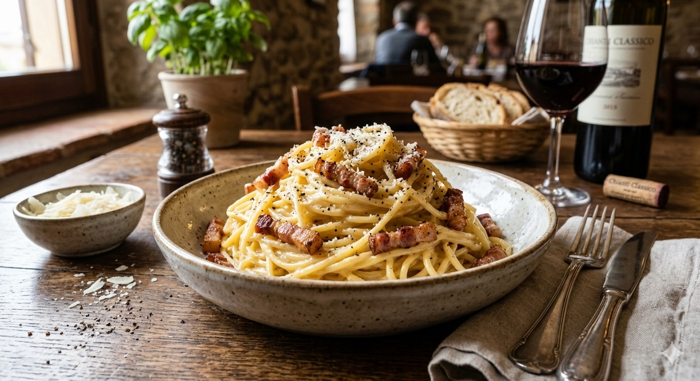
הקלאסיקה של רומא: פסטה ספגטי ברוטב קרמי של חלמונים, גבינת פקורינו רומאנו ופנצ'טה פריכה (או גואנצ'לה), עם המון פלפל שחור גרוס. ללא שמנת.
49 ₪
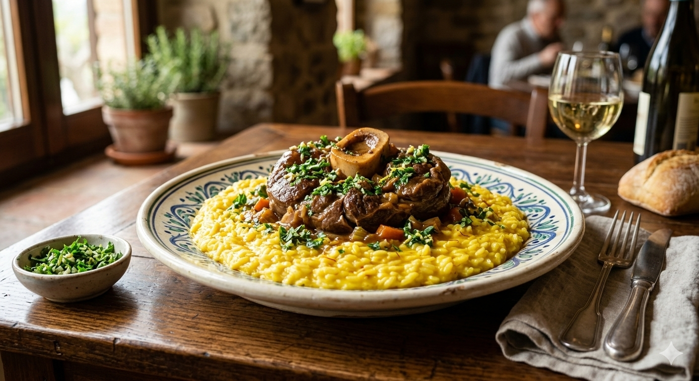
נתח שוק עגל עם עצם ומח, מבושל בבישול איטי עם יין לבן, ציר בקר וירקות. מוגש באופן מסורתי עם "גרמולטה" (שום, פטרוזיליה וגרידת לימון) על מצע ריזוטו זעפרן.
65 ₪
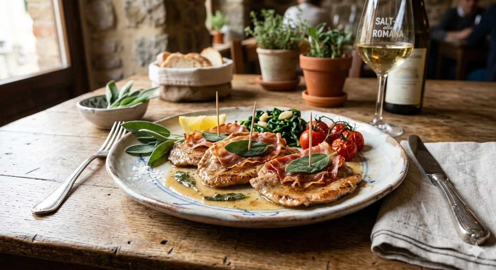
פרוסות דקות של פילה עגל צרובות בחמאה ויין לבן, כשעליהן מוצמדים עלי מרווה ופרוסות דקיקות של פרושוטו. מנה המשלבת רכות ומליחות מעודנת.
68 ₪
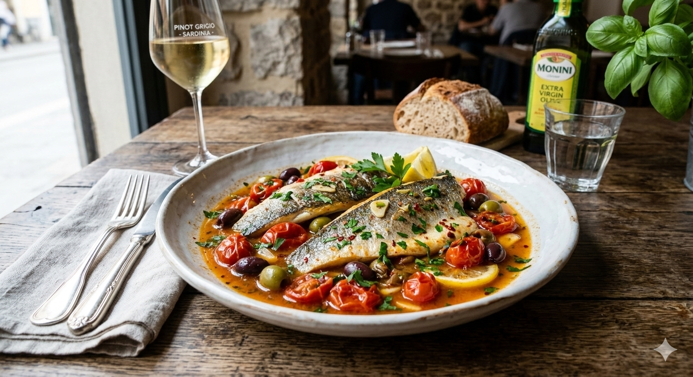
פילה לברק טרי מבושל קלות בציר של עגבניות שרי, יין לבן, שום, פטרוזיליה וזיתים. מנה ים-תיכונית קלה וארומטית.
74 ₪

נתחי שייטל עגל דקיקים, מקומחים קלות וצרובים ברוטב קטיפתי של חמאה, מיץ לימון טרי ויין לבן. מנה חמצמצה, קלילה ואלגנטית.
80 ₪
קינוחים
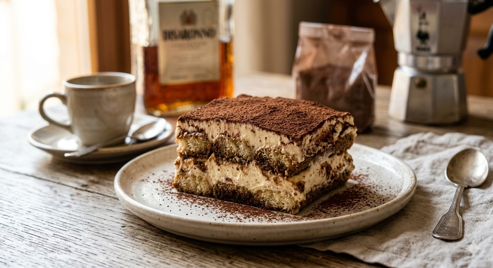
קינוח השכבות האייקוני של מחוז ונטו. שכבות של עוגיות בישקוטי סבויארדי ספוגות באספרסו איטלקי חזק וליקר אמרטו, עטופות בקרם מסקרפונה עשיר וקטיפתי. מוגש עם איבוק עדין של קקאו הולנדי מריר מעל.
30 ₪

מעדן שמנת איטלקי מבושל עם מקלות וניל ממדגסקר, בעל מרקם קטיפתי ורוטט. מוגש עם קולי (רוטב) פירות יער חמצמץ, פירות יער טריים ועיטור של עלי נענע רעננים..
22 ₪
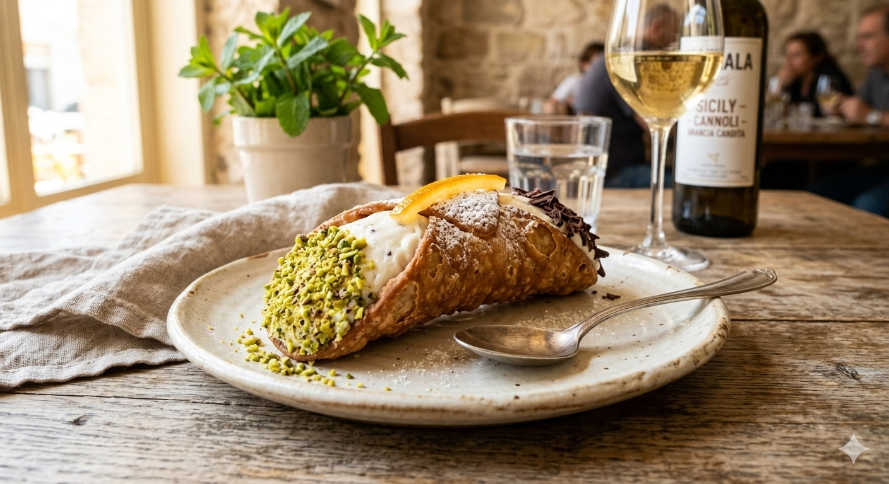
גלילי בצק פריכים ומטוגנים בניחוח יין מארסלה, ממולאים במקום בקרם גבינת ריקוטה כבשים עשירה. מעוטרים בקצוות בפיסטוקים גרוסים, שוקולד מריר וקליפת תפוז מסוכרת..
24 ₪

השילוב המושלם בין קינוח לקפה. כדור גלידת וניל איטלקית (ג'לאטו) איכותית "טובע" בתוך מנת אספרסו לוהטת וחזקה. מוגש עם שבבי שוקולד מריר או שקדים קלויים מעל..
24 ₪